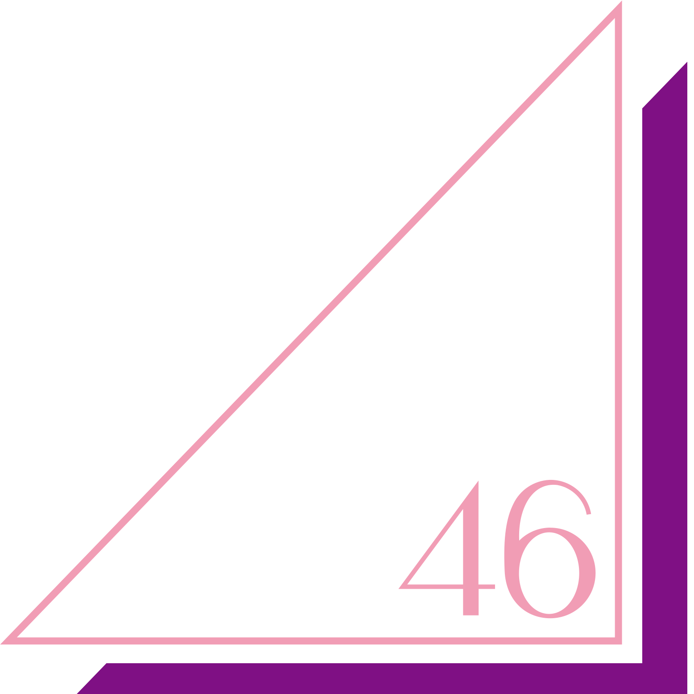
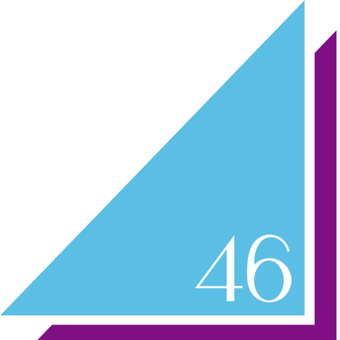

坂道博客圖片下載工具
今天也要應援在坂道上努力的大家哦~
乃木坂46

櫻坂46

日向坂46
線上體驗
*本頁面為流程體驗。
以下只模擬下載圖片所需的操作，其中的圖片亦可在程式的存儲庫中找到。
如需完整功能，請下載本程式 (ง •_•)ง
準備就緒
暫無數據
使用説明
下載方法
- 確保你已預先安裝Git以及Python (版本3.10.11或更新)
- 確定安裝完成後，在你所選的文件夾中打開CMD，執行以下指令：
- 執行
initialize.bat - 執行
run.bat - 當你已經執行過上述步驟一次，後續的每一次執行，只需執行
run.bat - 如果程式有更新可用，執行以下指令：
git clone https://github.com/sanmaii/SBID.git
git pull
使用方法
- 在程式主頁點擊組合的藍色按鈕，便能進入相應組合的下載頁面
如果點擊組合的圖標，則會進入作者在相應組合的首推 (發掘看看是誰吧 :D) - 在進入了下載頁面後，先選擇想要下載的成員
- 耐心等待加載，然後從該成員最近的博客中選擇一個
- 如果想下載的博客沒有在列表中，則需要自行輸入博客號碼
*關於博客號碼，可以參考最新博客當中的數字，應該不難找到其中的規律 owob - 選擇保存圖片的資料夾
- 輸入圖片的號碼，方便管理
*假如輸入的號碼是20，一共有5張圖片，那麽圖片的號碼分別會是20, 21, 22, 23和24 - 選擇只需要下載你所選的博客的圖片；抑或從該博客開始，下載到所選成員最新博客的圖片